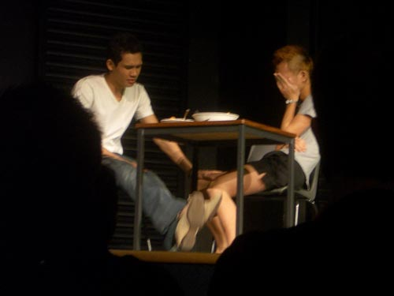
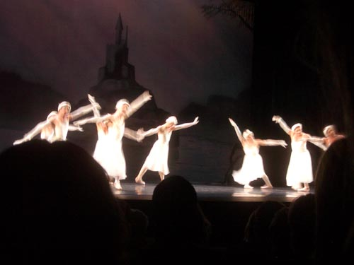

| < | > |
| theatre | [2006-03-25 22:15] |
| it's been a theatrical fortnight - last weekend we went to see the Singapore Playhouse perform some short plays by Alfian Sa'at - Landmarks: Asian Boys Volume 2
 it was nice to be in a young mixed audience watching stories told just for the love of it - empathy and laughs - i couldn't help wondering if all those young people were going to go back to Singapore and put a stop to the nonsense still on the gay theme - last night we went to see Les Ballets Trockadero de Monte Carlo - the male ballerinas  it was silly pastiche fun - full of clown-like timing and knowing looks - my favourite was a rather lanky swan who wore glasses on stage and insisted that everyone was her inferior - we regretted a little that we hadn't gone to see them do the modern pieces - Merce Cunningham - Pina Bauch |
|